Fotográfia & Film — Vas megye
Gérnyi OlivérFotózás & Videókészítés
Professzionális fotós és videós szolgáltatások Vas megyében és a környező településeken — természetes, hangulatos, kreatív szemlélettel.
Portfólió
Munkáim
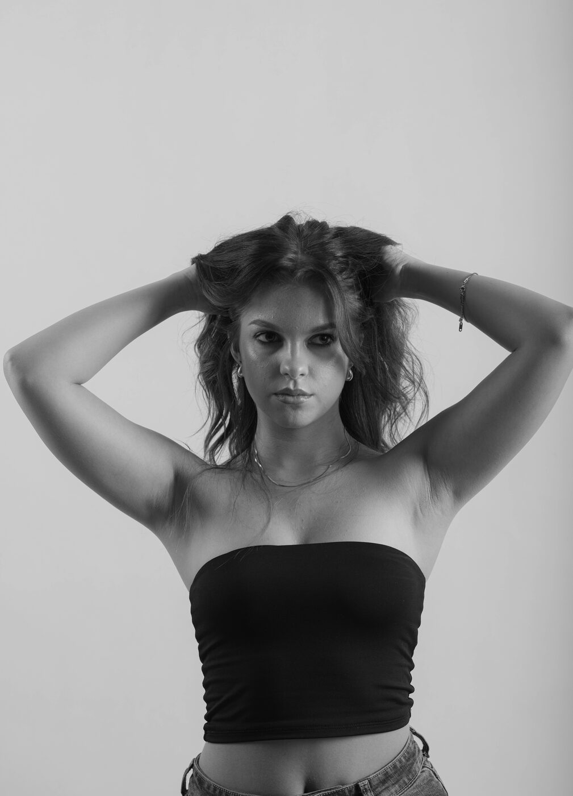
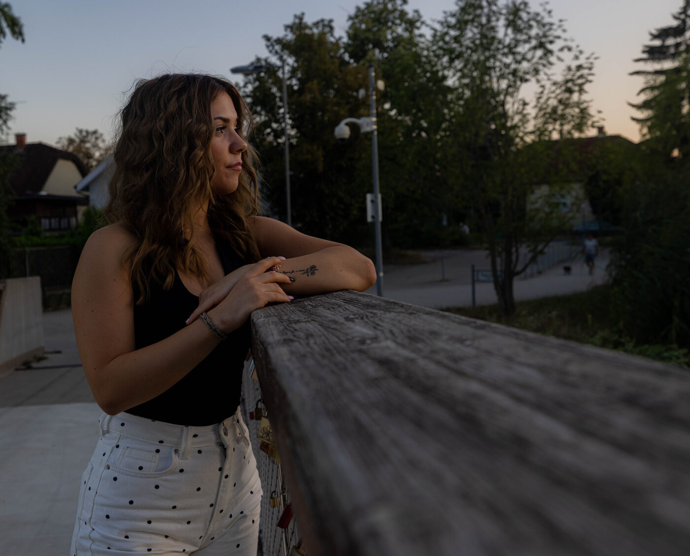
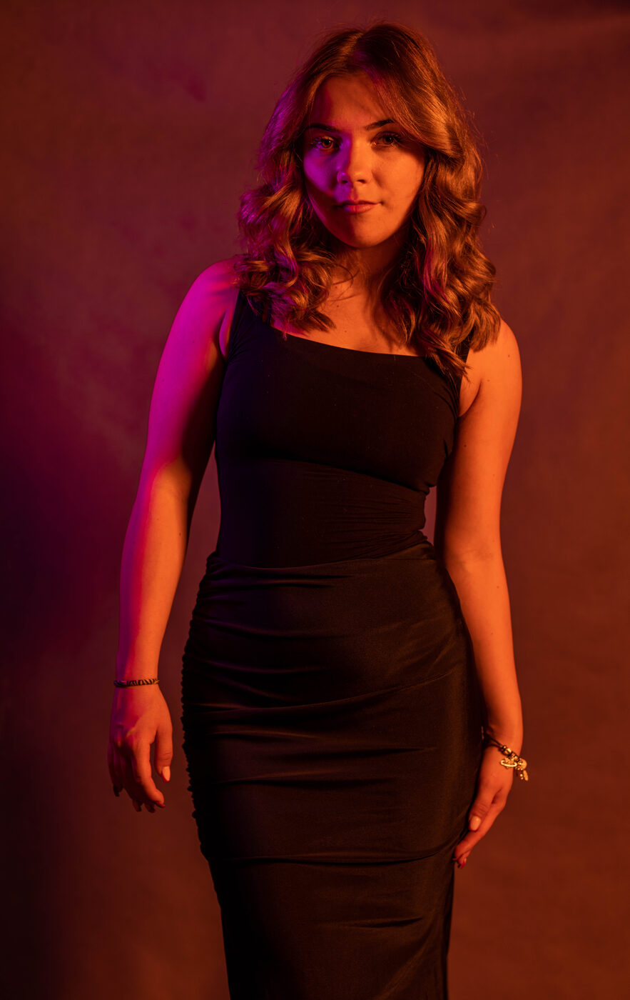
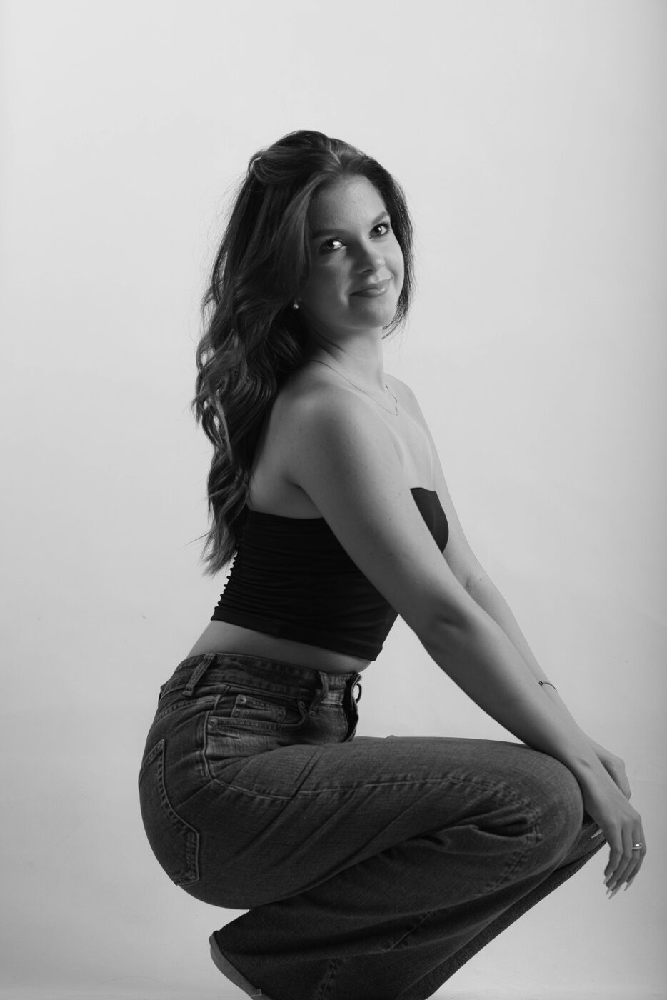
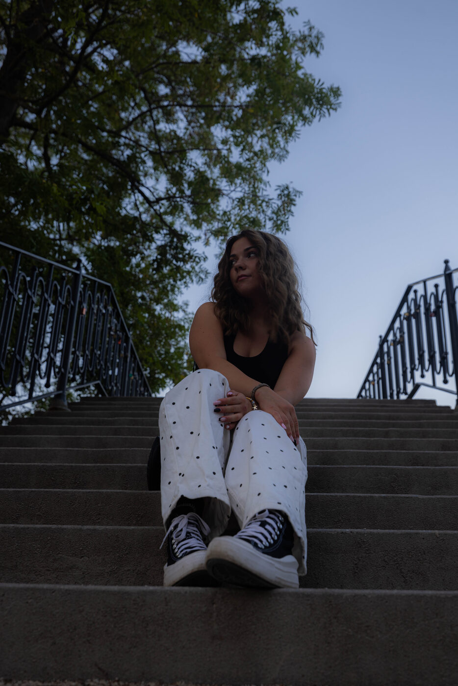
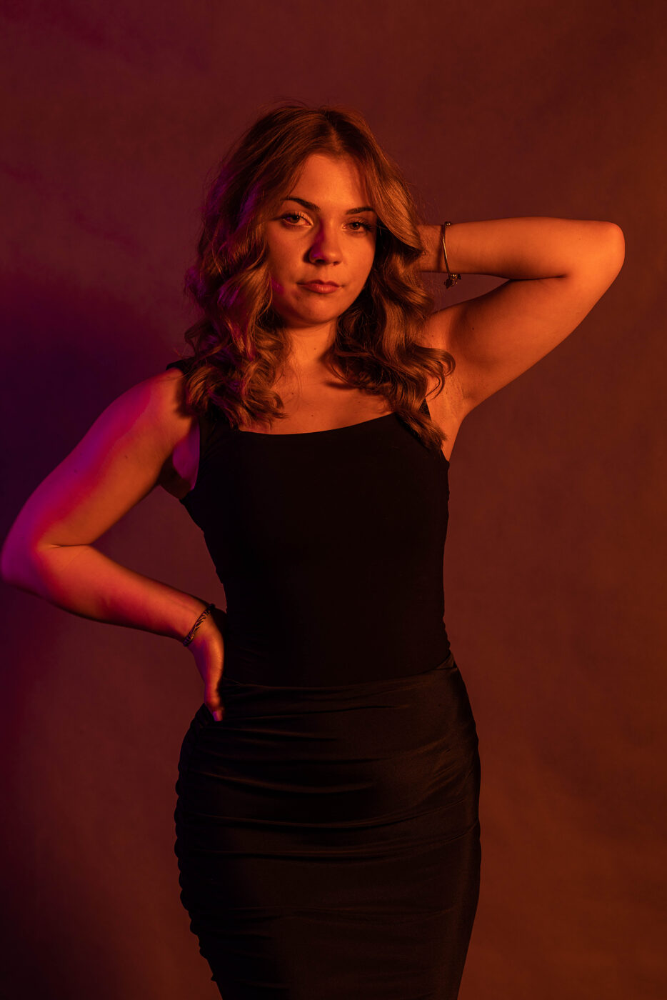
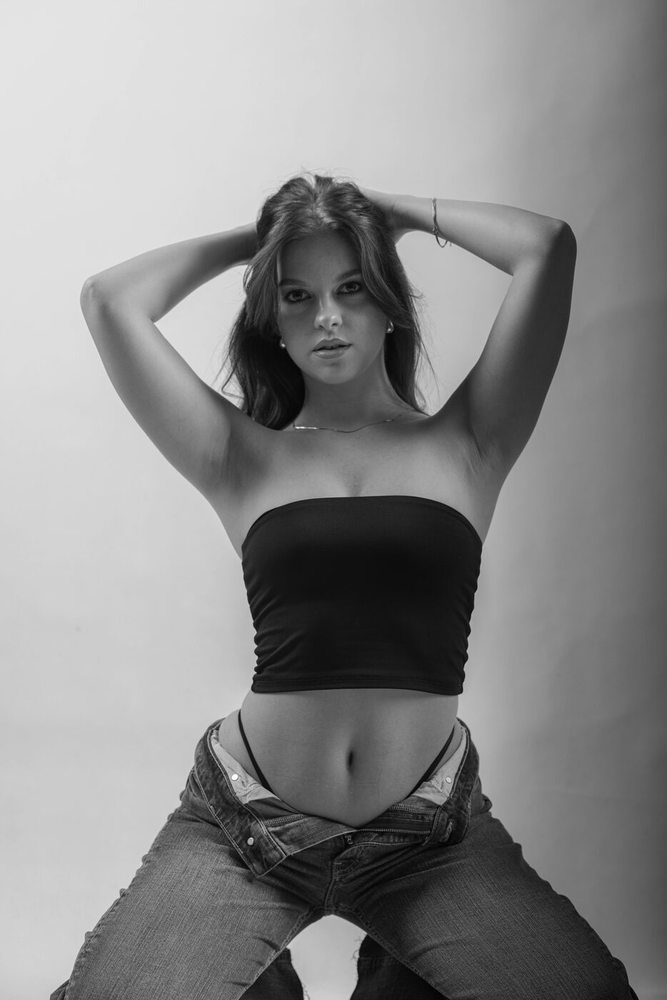
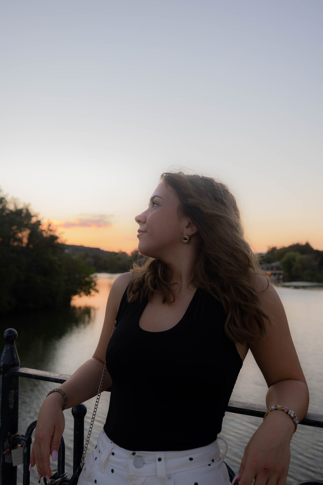
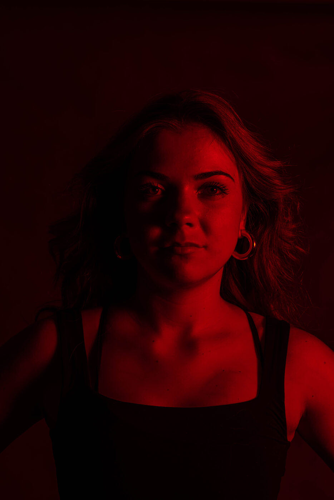
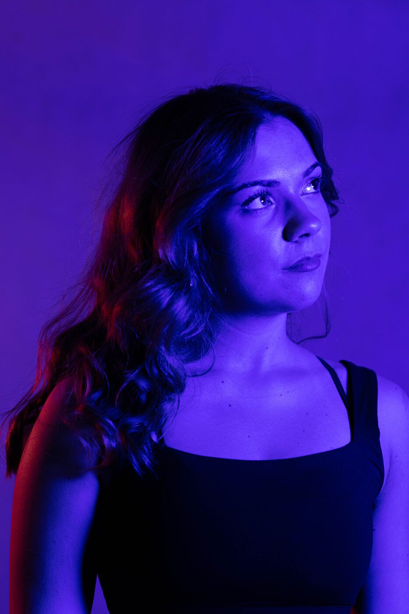
Szolgáltatások
Milyen fotózásokat vállalok?
Igazolványkép & Portré fotó
Hivatalos igazolványkép és karakteres portré, stúdióban vagy szabadtéren.
Reklám & Image videók, Shorts
Reklám- és imázsvideók, valamint dinamikus, rövid Shorts tartalmak.
Rendezvény fotózás & videózás
Esküvők, céges rendezvények és privát ünnepségek teljes körű dokumentálása.
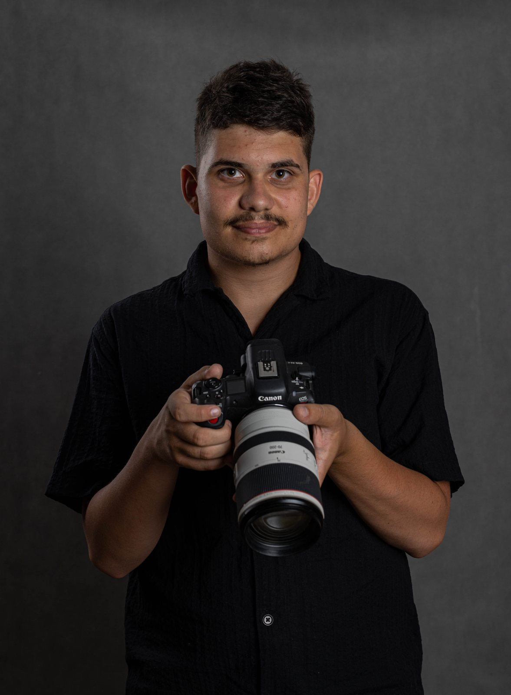
Rólam
Gérnyi Olivér
Egy média klub keretein belül ismerkedtem meg a fotózással, videózással. Azonnal beleszerettem, és a hobbimmá vált. Nagyjából három éve gyakorlom a szakma különböző ágait, minden részét kedvelem, nem tudnék kedvencet mondani.
Számomra az alkotás mindig is fontos volt, szeretem megörökíteni a pillanatot, a saját kreativitásomat, nézőpontomat beleszőve. Folyamatosan igyekszem fejlődni, tanulni.
Ha három szóban kéne jellemeznem a filozófiámat a fotózással kapcsolatban, ezt mondanám:
Közösségi média
Kövess Instagramon
Kapcsolat
Kérj ajánlatot
Működési terület
Vas megye és környező települések